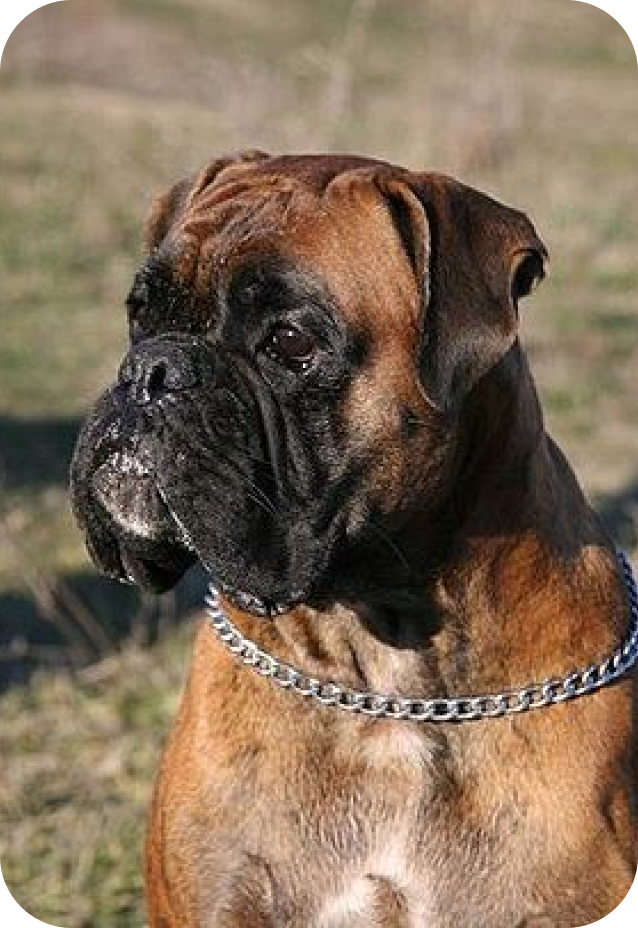

Боксери
Зазвичай мають жовто-коричневе забарвлення. Це середні, мускулисті собаки, активні, грайливі та лояльні. Вони добре ладнають із дітьми та потребують фізичних навантажень.
Особливості
Боксер дуже слухняний і легко дресується.
Характер
Розумний, уважний, спокійний, дружелюбний.
Походження
Боксери походять з Німеччини. Порода сформувалася в XIX столітті.